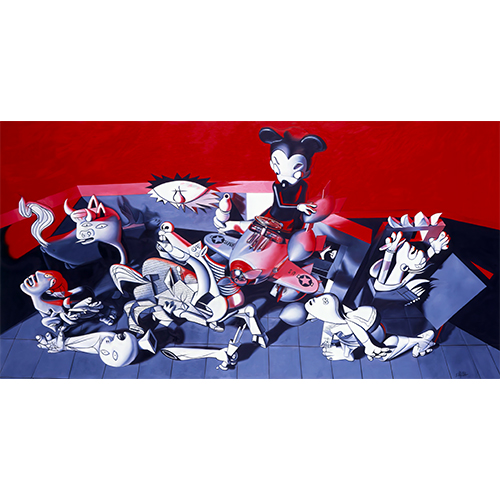

Literature
Roger Gastman, Morning Wood (Corte Madera, CA: Gingko Press, 2003), pp. 262–263. ISBN 978-1-58423-159-2.
Notes
This work references Pablo Picasso’s Guernica (1937).


Roger Gastman, Morning Wood (Corte Madera, CA: Gingko Press, 2003), pp. 262–263. ISBN 978-1-58423-159-2.
This work references Pablo Picasso’s Guernica (1937).